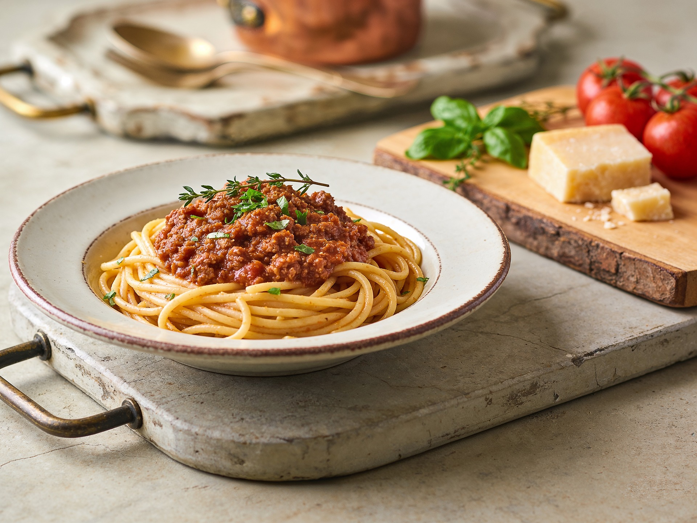
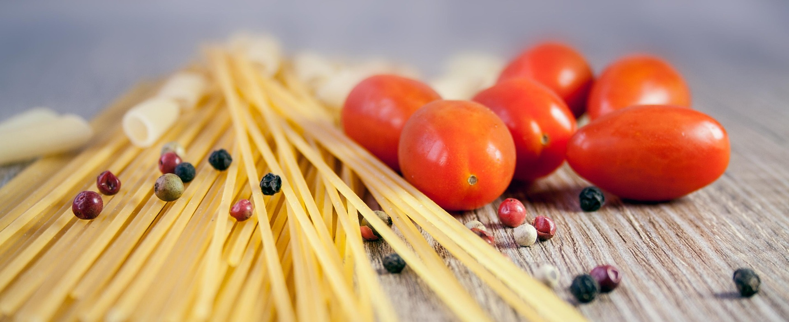
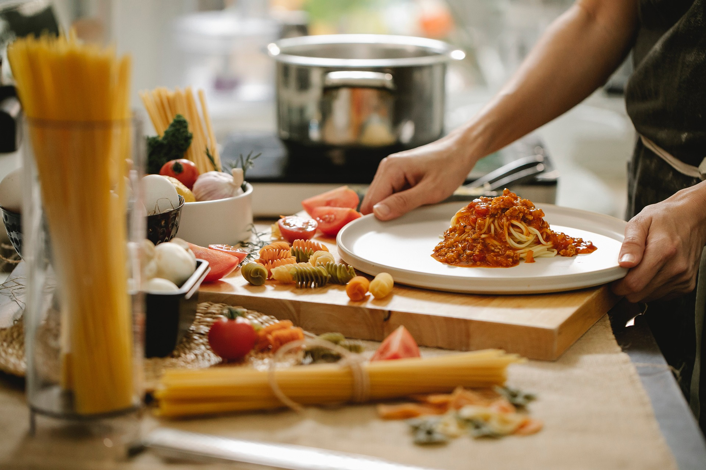

Des spaghettis al dente généreusement nappés d'une sauce bolognaise maison, lentement mijotée avec du bœuf savoureux, des tomates mûries au soleil et des herbes aromatiques. Sublimé par un nuage de parmesan fraîchement râpé et quelques feuilles de basilic, ce grand classique italien promet un pur moment de gourmandise et de réconfort.
Prépation:15 minutes Cuisson:20 minutes Total:35 minutes

Épluchez et émincez finement les oignons et l'ail.
Faites chauffer l'huile d'olive dans une poêle sur feu vif. Quand l’huile d’olive est bien chaude, déposez les oignons et l’ail émincés dans la poêle et faites-les revenir pendant 3 min, en remuant bien, jusqu'à ce que les oignons soient bien translucides. Ajoutez ensuite la viande de bœuf hachée, puis poursuivez la cuisson pendant 3 à 4 min sans cesser de mélanger, jusqu'à ce qu'elle ne soit plus rosée.
Incorporez les tomates pelées, les branches de thym et la feuille de laurier. Salez et poivrez selon vos goûts, ajoutez le sucre, puis mélangez. Baissez sur feu doux et laissez mijoter pendant 10 min environ, en remuant régulièrement.
Pendant ce temps, portez à ébullition un grand volume d’eau salée dans une casserole sur feu vif. Dès l’ébullition, plongez les spaghettis dans l’eau bouillante et laissez-les cuire en suivant les instructions du paquet ou jusqu’à ce qu’ils soient al dente. Lorsque les spaghettis sont cuits, égouttez-les dans une passoire et réservez-les au chaud.
Quand la sauce bolognaise est prête, rectifiez l’assaisonnement en sel et en poivre si nécessaire, puis nappez-en les spaghettis déposés dans les assiettes. Dégustez aussitôt.

La sauce bolognaise est la plus répandue et la plus revisitée des sauces italiennes ! Traditionnellement, il s’agit d’un plat d’hiver que l’on réalise avec des tomates pelées en boîte et du lard pour l’enrichir. Cette version plus classique est aussi plus intéressante d’un point de vue nutrition. En effet, elle contient du bœuf haché riche en protéines de qualité et en fer héminique bien absorbé par l’organisme. Pour rendre ce plat complet et sain, on l’accompagnera idéalement d’une salade verte ou de crudités et on évitera aussi d’avoir la main trop lourde sur le fromage râpé !
Si vous aimez les saveurs épicées, ajoutez une pointe de couteau de piment de Cayenne moulu dans la sauce bolognaise au cours de la cuisson. Vous pouvez également incorporer quelques feuilles de basilic hachées, qui s'allient à merveille avec la tomate. Au moment de servir, saupoudrez votre dôme de spaghettis de parmesan ou de gruyère râpé pour plus de gourmandise !